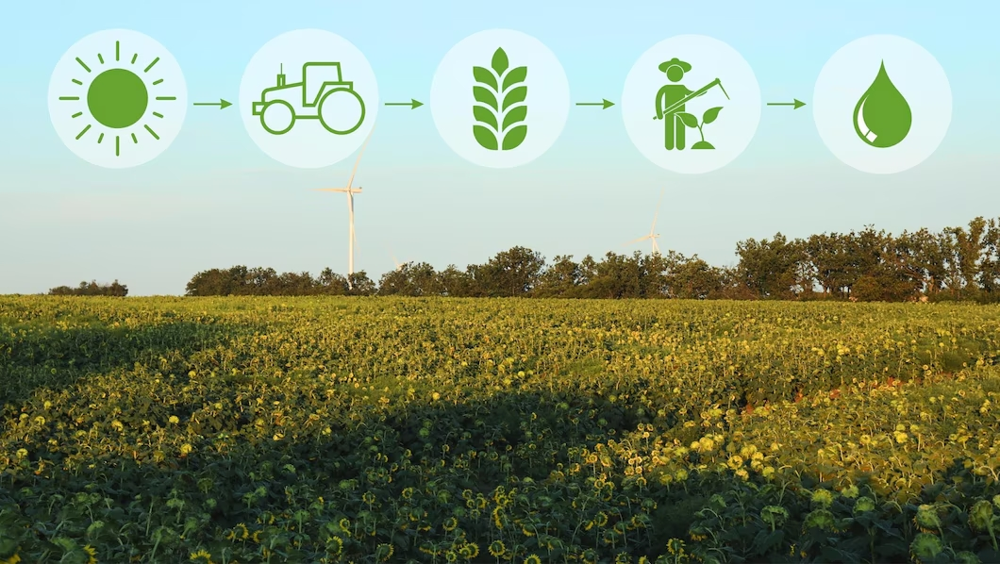

PMFBY aims to support production in agriculture by providing affordable crop insurance .

PMFBY Achievements
🍃Largest crop insurance scheme in the history of independent India and globally, the third largest scheme in terms of premium.
🍃29.19 crore farmer applications have insured their crops under the PMFBY since 2016.
🍃More than Rs 95,000 crore worth of claims have been provided to farmers since the launch of the scheme in the year 2016, against the total premium of Rs 17,000 crore paid by them.
🍃Lowest premium for all farmers of India - 2% for all Kharif Food & Oilseeds crops, 1.5% for Rabi Food & Oilseeds crops and 5% for Annual Commercial/Horticultural Crops.
PMFBY Scheme
🍃The Union Government has allocated Rs.16,000 crores for Pradhan Mantri Fasal Bima Yojana for the Fiscal Year 2021-22.
🍃This is approximately Rs.305 crore more than what was allocated for the year 2020-21.
🍃The PMFBY aims to boost the safety of farmers’ crops and to ensure that the maximum benefit of crop insurance reaches farmers.